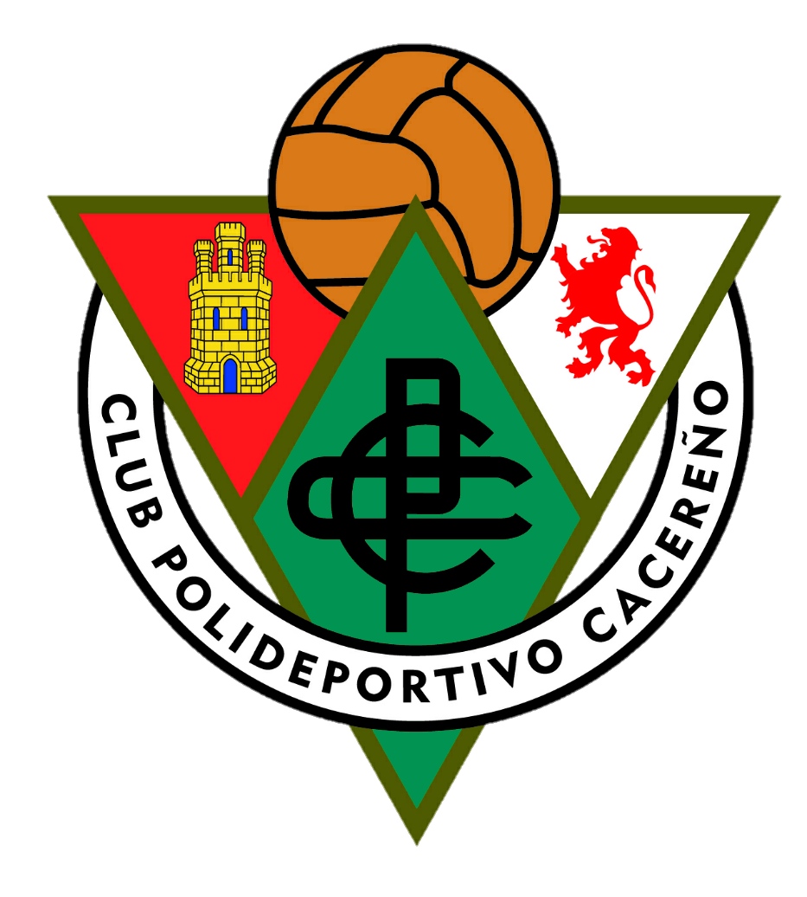
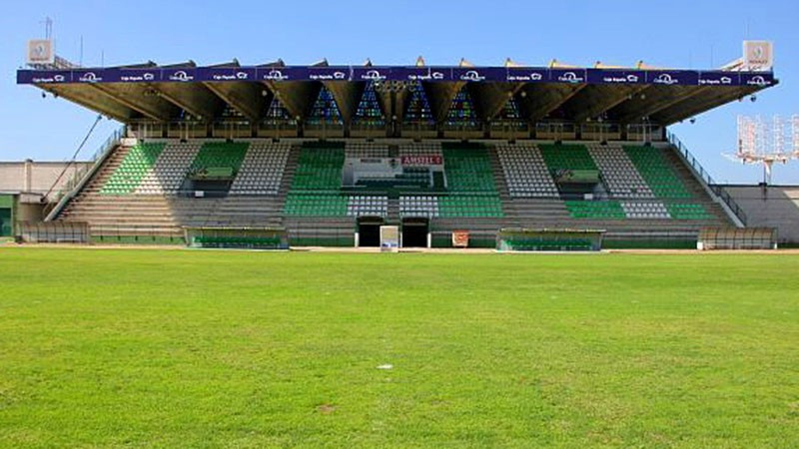
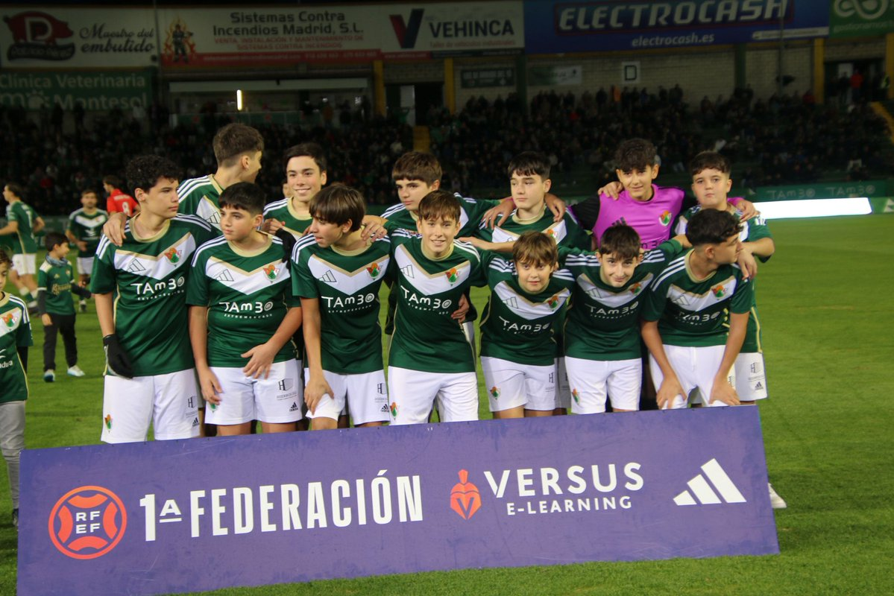

Bienvenidos al Portal Oficial
Toda la información del deporte rey en nuestra ciudad. Noticias, estadísticas y comunidad.
Destacados de la Semana
-
Nuevo
C.P. Cacereño
Análisis del último partido y las claves del ascenso.
-

Estadio Príncipe Felipe
Conoce las instalaciones y compra tus entradas.
-

Cantera Local
Los jóvenes talentos que están destacando esta temporada.